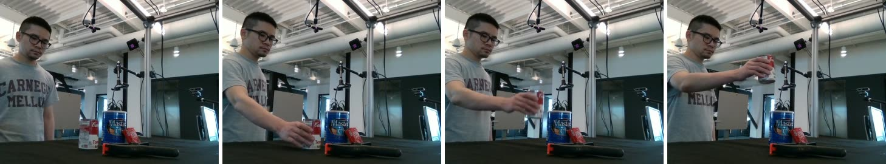
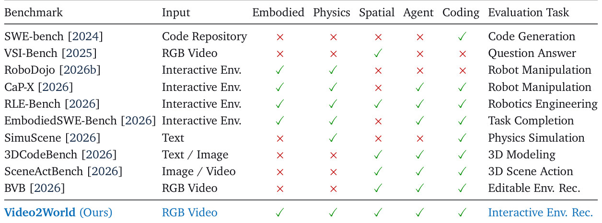
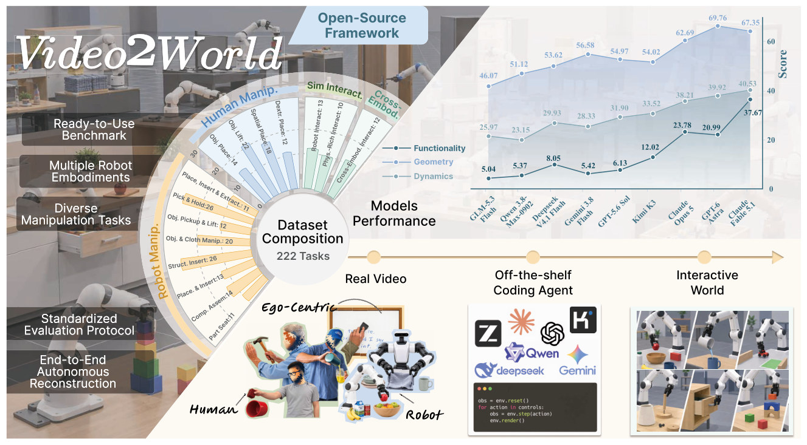
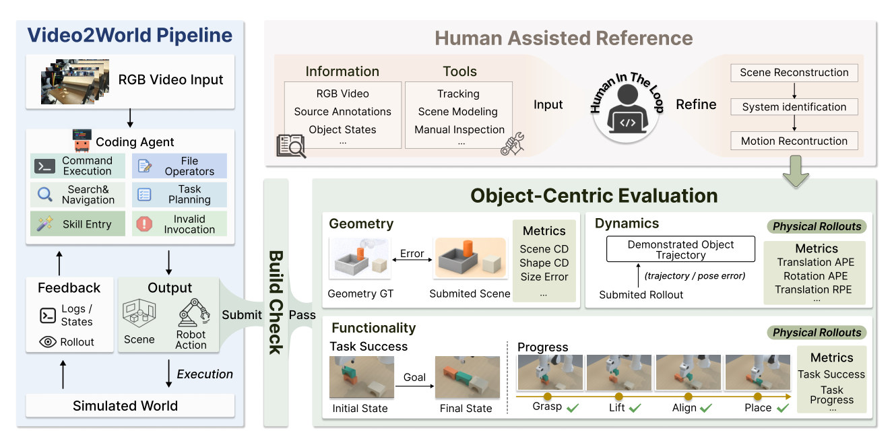
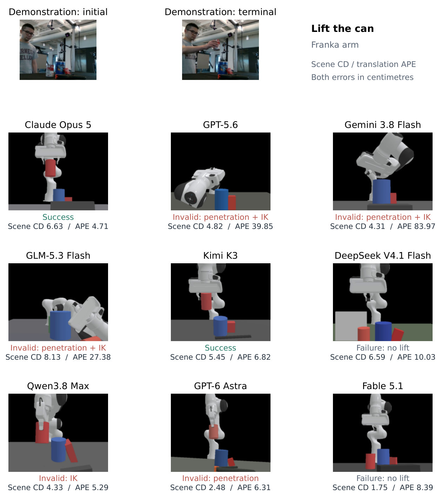
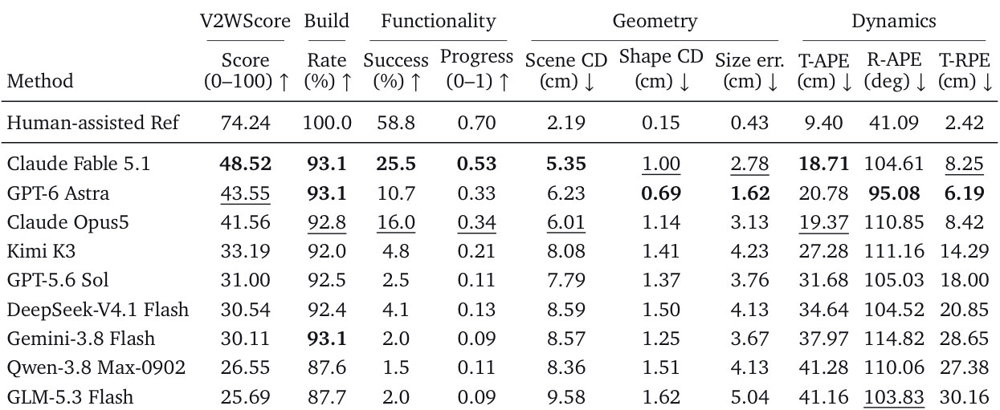
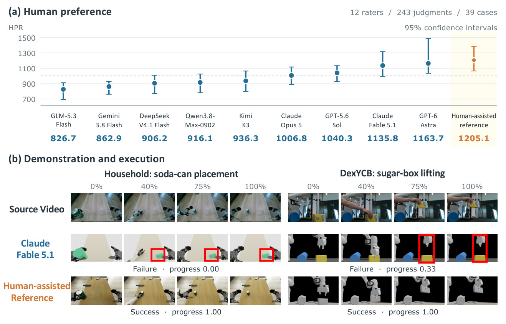
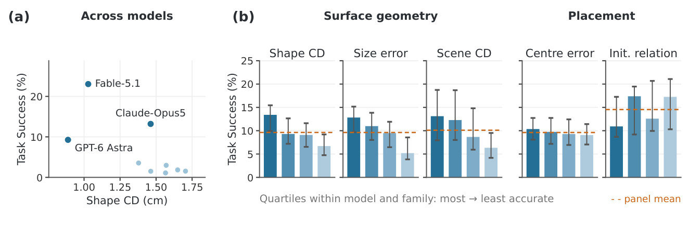
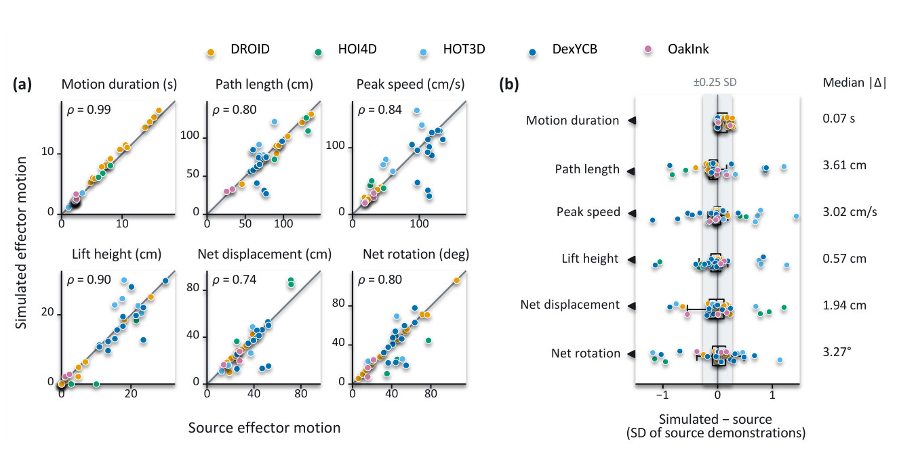
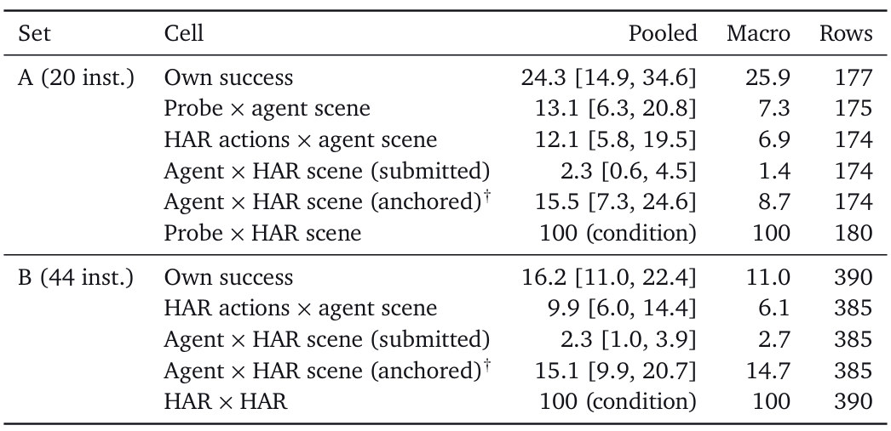

Agent-centric-real-to-sim · 归档于 2026-11-16
Video2World
Video2World: Benchmarking Coding Agents for Interactive World Modeling from Embodied Videos
arXivPDF Project pageCodeDataset
归档到 Agent-centric real-to-sim：它考的正是“agent 从一段视频建出可交互的 sim world”这件事，用隐藏的几何、物体运动和任务标注分开打分。也贴近 Robotic harness（coding agent 在 sandbox 里写场景和机器人控制，靠执行反馈修改）。
TL;DR
- Problem
- 从视频自动建可交互 sim 的系统越来越多，可现有 benchmark 只测零件（空间问答、写代码、建 3D）或只看外观，没人检查机器人在建出的 world 里能不能真把视频里的事做成。
- Idea
- 把 video→sim 当成软件工程任务：coding agent 只拿 RGB 视频和指定的 simulator、机器人，在 sandbox 里写场景和控制，用自己的 rollout 修改；benchmark 冻结交付包、自己跑物理，用隐藏标注分开打 geometry、dynamics、function 三项。
- Result
- 222 个 instance 上的 9 个 coding-agent 系统：六个成功率低于 5%，从 Claude Opus 5 起跳到 16.0%，Claude Fable 5.1 到 25.5%；人工辅助参照 58.8%。GPT-6 Astra 在 agent 里物体形状最准、人眼偏好最高，却只成 10.7%（Table 2、Fig. 3a）。
Problem
建出来的 world 看着像不算数：要让机器人在里面按物理把事做成，之前没有考场这样考
Running example · 后面每个 stage 都跟着它走
DexYCB 举罐子（Fig. A10、§F.2）：一段第三人称 RGB 视频，一个人从桌上拿起罐子举高（旁边有蓝罐、小红盒），没有深度，没有相机标定；指定 SAPIEN 里的 Franka Panda 臂，TCP 位姿 + 夹爪，5 Hz → 想要：一个 scene + 控制包，benchmark 执行后罐子被机器人举高 ≥ 10 cm 并静止，而且过程物理合法。论文让 9 个 agent 都做了这一题，后面拿它们来比。

flowchart LR IN["例子输入
举罐子的 RGB 视频"]:::example IN --> A1["人工 real-to-sim
RialTo、Re3Sim"] A1 --> AX["每条视频都要人工搭
HAR 有源标注+人工
也只成 58.8%"]:::gap IN --> B1["Agentic video→sim
自建自查，规则自定"] B1 --> BX["没有共同的隐藏真值
Astra 罐子升 20.67 cm
记录里机器人穿模"]:::gap IN --> C1["单项能力 benchmark
CaP-X、VSI-Bench 等"] C1 --> CX["环境现成，不考“建”
Table 1 Embodied ✓ 的
4 个都给现成环境"]:::gap IN --> D1["按外观打分的重建
BVB：Blender 动画"] D1 --> DX["不跑物理，没有机器人
Fable 几何最准 1.75 cm
罐子只升 0.006 cm"]:::gap
只有第 3 条是直接读论文的表（Table 1）。第 1 条的 58.8% 是 HAR 在全部 222 题上的成功率（Table 2），这条视频上 HAR 的结果论文没单独报。第 2、4 条：Video2Policy、Agentic Real2Sim、BVB 都没在 Video2World 上跑；这里用本文在这条视频上测到的数（Fig. A10、§F.2）说明它们的评测方式会漏掉什么，属于推断（依据 §1、§5、§A.3 和 Table 1）。
根本问题：world 对不对，要看机器人在里面按物理做一遍，能不能把视频里的事做成；以前要么靠人工搭，要么只测零件或外观。 这篇的切入点：做一个端到端考场：agent 只拿视频、交 scene + 控制包，benchmark 自己跑物理，用隐藏的几何、物体运动、任务标注分开打分，物理不合法直接判败。
Related work
| 相关工作 | 解决什么 | 怎么解决 | 和本文的区别 |
|---|---|---|---|
| 同一问题 · 别的解法 | |||
| 人工 real-to-sim RialTo、Re3Sim、PhysTwin | 把真实场景或物体搬进 sim，训练和迁移策略 | 人工重建、标定几何和物理；PhysTwin 从交互拟合可变形模型 | 每个场景都要人工和专门采集 → 本文让 agent 只从 RGB 视频建，人工版只当参照（HAR） |
| Agentic video→sim 系统（本文要测的能力） Video2Policy、Agentic Real2Sim | 从视频或录像自动建任务、episode twin | LLM 生成并修改奖励；VLM agent 调感知和仿真工具 | 各自一套任务和成功规则，没有共同的隐藏真值 → 本文不提出系统，给所有 coding agent 同一个考场 |
| 视频重建 benchmark（本文所属的一族，最接近） BVB | 测把视频重建成带动画的 Blender 场景 | 按时空事实和感知相似度打分 | 物体运动是写出来的动画、没有机器人（Table 1 Embodied ×、Physics ×）→ 本文物体只能被机器人通过物理推动，再判任务 |
| 相似做法 · 别的问题 | |||
| 单项能力 benchmark VSI-Bench、3DCodeBench、SceneActBench、SimuScene | 测视频空间问答、3D 建模、场景操作、物理情景代码 | 问答，或对隐藏几何、文本指定的情景判分 | 各测一两项（Table 1），不要求建出能交互的环境 → 本文一道题同时考五项 |
| Coding / code-as-policy SWE-bench、CaP-X、RLE-Bench、EmbodiedSWE-Bench；Code as Policies、Voyager | agent 写、改代码，或写机器人控制程序 | 在现成的 repo 或交互环境里执行判分；按执行反馈改程序 | world 是给定的，agent 只交程序或动作 → 本文的 world 和动作都要 agent 从视频交出来 |
来源：论文 §1、§5 Related Work 和 Table 1，未另行检索。论文没有和表里任何一行做定量对比；§5 里 SayCan、PaLM-E、VoxPoser、GenSim、RoboGen 只作背景提到。

怎么读这张图
- 五列能力：Embodied（具身推理和规划）、Physics（物理动力学和交互）、Spatial（空间理解）、Agent（agent 式规划和迭代交互）、Coding（可执行代码）。
- Input 列：吃视频的只有 VSI-Bench、SceneActBench（Image / Video）、BVB 和本文；前三个的 Embodied、Physics 都是 ×。
- Embodied ✓ 的四行（RoboDojo、CaP-X、RLE-Bench、EmbodiedSWE-Bench）输入都是 Interactive Env.：环境是现成的，不用 agent 去建。RLE-Bench 五项全 ✓，但同样从现成环境出发。
- 最后一行 Video2World：输入 RGB Video，五项全 ✓，任务叫 Interactive Env. Rec.（可交互环境重建）。举罐子这一题就同时要空间（罐子多大、在哪）、物理（抓得住）、具身（Panda 怎么动）、agent（看 rollout 再改）和 coding（写成包）。
Level 1 · Big picture
一条视频进，一个 scene + 控制包出；benchmark 自己执行，几何、动态、功能分开打分

怎么读这张图
- 左侧五个标签（Ready-to-Use Benchmark … End-to-End Autonomous Reconstruction）：benchmark 的定位。End-to-End 指 agent 从视频一路做到能执行的 world，中间没有人。
- 中间扇形 Dataset Composition · 222 Tasks：四大类 Robot Manip.、Human Manip.、Sim Interact.、Cross-Embod.，每根柱是一组任务。例子在 Human Manip. 的 Obj. Lift: 22（DexYCB 举物，机械臂版和双手版各 11 题）。
- 右上 Models Performance：每个模型三条线，下面深色是 Functionality，中间是 Dynamics，最上面浅色是 Geometry（都是 0–100 的分项得分）。最右的 Claude Fable 5.1 Functionality 37.67 最高；GPT-6 Astra 的 Geometry 69.76 最高，Functionality 20.99 却低于 Claude Opus 5 的 23.78：“看着更好，用着更差”在这张图上已经能看到。
- 底部 Real Video → Off-the-shelf Coding Agent → Interactive World：现成的 coding agent（中间是各家 logo，下面一段
env.step(action)代码），右边是建好的可交互 world。例子里就是：举罐子视频 → agent → Panda 在 sim 里举罐子。
flowchart LR I["Input
举罐子 RGB 视频
+ SAPIEN Panda 规格"]:::example --> M["Coding agent
写场景 + 5 Hz TCP
跑自己的 rollout 改"] M --> O["Benchmark 执行打分
几何 · 轨迹 · 任务
升 ≥10 cm 且合法"]:::win
Level 2 · Stages
6 个 stage：建题 → agent 建 world → 交付执行 → 三项打分

怎么读这张图
- 左栏 Video2World Pipeline（Stage 2）：RGB Video Input → Coding Agent（Command Execution、File Operators、Search & Navigation、Task Planning 等工具格）→ Output（Scene、Robot Action）→ Execution → Simulated World → Feedback（Logs / States、Rollout）再回到 agent。例子里 agent 在这个环里写罐子、桌子和 Panda 的 TCP 序列，回放看罐子有没有被举起来。Skill Entry、Invalid Invocation 两格正文没有解释。
- 中间竖条 Submit → Build Check → Pass（Stage 3）：交付包先过 build check，不过就全记 0。
- 右下 Object-Centric Evaluation 三块：Geometry（Geometry GT 对 Submitted Scene，Scene CD、Shape CD、Size Error）= Stage 4；Dynamics（Demonstrated Object Trajectory 对 Submitted Rollout，标着 Physical Rollouts，Translation APE、Rotation APE、Translation RPE）= Stage 5；Functionality（Initial State → Goal → Final State，Progress 的 Grasp ✓ Lift ✓ Align ✓ Place ✓）= Stage 6。
- 右上 Human Assisted Reference：Information（RGB Video、Source Annotations、Object States）+ Tools（Tracking、Scene Modeling、Manual Inspection）→ Human In The Loop → Refine（Scene Reconstruction → System identification → Motion Reconstruction），箭头落进同一个评测：HAR 和 agent 用同一套分数比（E2）。
flowchart TD S1["1 · 建题
罐子几何+轨迹+规则"]:::example --> S2["2 · Agent 建 world
只看 RGB，≤180 min"] S2 --> S3["3 · 交付并执行
9 个包都跑完"] S3 --> S4["4 · Geometry
Fable 1.75 cm 最准"] S3 --> S5["5 · Dynamics
Opus 4.71 cm 最贴"] S3 --> S6["6 · Function
2 成 · 5 拒 · 2 没举"] S4 --> V["V2WScore
build 门 × 三项平均"]:::win S5 --> V S6 --> V click S1 href "#stage-1" click S2 href "#stage-2" click S3 href "#stage-3" click S4 href "#stage-4" click S5 href "#stage-5" click S6 href "#stage-6" click V href "#stage-all"
点击 stage 展开 Level 3 细节；三项怎么合成一个分见 V2WScore。
Level 3 · Details
每个 stage 的细节
Stage 1 建题：视频 → 隐藏标注 + 目标配置 源视频和数据集自带的记录 → 隐藏的几何、物体运动、任务规则，配上目标 simulator 和机器人
- Why：判一个 world 对不对，要一份和 simulator、机器人都无关的“标准答案”；只看画面判不了（§3.1）。
- 选片：189 段 clip，来自 FurnitureBench、DROID、RoboDojo、HOI4D、HOT3D、DexYCB、OakInk2、自家家务数据和重建 twin；保留初始布局、关键交互和结尾（B.1）。
- 成题：一段 clip 配一个目标配置（simulator + 机器人 + 控制接口）就是一个 instance，共 222 个、39 个 task family；人手视频各出机械臂版和双手版（Table A8、Fig. A1）。
- 标注（object-centric 三类）：scene geometry（形状、尺度、铰接、空间关系）；object motion（参与物体怎么动）；task spec（角色、初始条件、必需事件、终态、progress 里程碑）（§3.1、B.3）。
- 跨形态对齐：人手视频只对齐物体，不对齐手；按隐藏标注给目标机器人导出参考行为，在接触物理下执行，确认这个机器人做得成（§3.1、B.5）。
- 审标注：作者拿源视频、物体轨迹、参考执行和规则一起核对；发现 2 个误判成功（bulb、drawer）和 3 个 progress 分歧，改规则后对所有方法统一重算（B.7）。
flowchart TD a["源视频 + 数据集记录
YCB mesh、标定视角、位姿"]:::example --> g["Scene geometry
罐子形状尺寸、桌面高"] a --> m["Object motion
罐子的轨迹"] a --> t["Task spec
升 ≥10 cm + 静止"] g --> h["目标配置 + 可行性
SAPIEN Panda，5 Hz TCP"] m --> h t --> h
Running example 在这一步
DexYCB 自带 YCB mesh、标定视角、物体和手的位姿；标注工作是换算单位和坐标系，用初始 mesh 的底部估出桌面高度（Table A9）。
任务规则：罐子从初始支撑上升 ≥ 10 cm、终态静止，并通过机械臂的物理合法性检查（C.3.1）。Progress 三级：抓到 → 升起（3 cm）→ 终态仍在高处（C.3）。
目标配置是 Human video to arm：SAPIEN 里的 Panda，提交 TCP 位姿 + 夹爪 7 个数，5 Hz（Table A2）。这一题属于 F14 DexYCB lifting · arm（11 题），同一视频还有一份 paired Wuji hands 版（F15）。
Stage 2 Agent 建 world：sandbox 里写场景和控制，看自己的 rollout 改 RGB 视频 + 公开的 simulator 和机器人规格 + 通用 coding 工具 → 候选的 scene + 控制
- Why：要测的是部署形态的 coding agent，所以只固定接口、信息边界和预算，内部怎么做完全放开（§3.2）。
- 能看到：RGB 视频（分辨率、帧数）；目标 simulator 和机器人的文档、几何、关节限制、控制约定、提交要求（Table A1）。
- 看不到：深度、源相机标定、参考 mesh、物体真轨迹、源机器人 log、分数；任务是什么、哪个物体扮演什么角色，也要 agent 自己从视频推（A.1）。
- 工具：shell、读写改文件、按名字和内容搜索、任务清单（Table A4）；benchmark 操作有抽帧（默认 16 帧，≤ 1024 px）、physical replay（渲染的 rollout + 诊断）、validate、checkpoint、submit（Table A5）。
- 反馈环：写场景和控制 → replay 自己的候选 → 和源视频对照 → 改；反馈只关于自己的重建，隐藏分数从不返回（A.5）。
- 预算：180 min 墙钟、$60 API 阈值、最多 3 次提交，没有 tool-call 或 turn 上限。7 个 OpenCode 配置另有 1 CPU、4 GiB、无 GPU、只连模型 API 和提交服务（A.1、A.5）。
- 时间表（Table A6，OpenCode 由执行器强制）：约 30 min 交第一版并 validate → 120 min 只修交付 → 150 min 关闭可选 refinement → 165 min 停止生成，取最新合法 checkpoint → 180 min 结束。
- 9 个系统各跑一次：7 个经 OpenCode 1.18.29，GPT-6 Astra 用 Codex CLI（effort Ultra），Fable 5.1 用 Claude Code（Max）；Gemini 3.8 Flash effort High，其余未指定（§4.1、Table A7）。
flowchart TD a["抽帧看视频
16 帧，≤1024 px"]:::example --> b["写场景 + 控制
罐子、桌、TCP 行"] b --> c["Physical replay
看渲染 + 诊断"] c -->|不像就改| b c --> d["Validate → submit
≤3 次，≤180 min"]
Running example 在这一步
agent 手上只有那段视频和 Panda 规格。它要从画面估出罐子的尺寸和位置、相机内参，把罐子建成 dynamic 物体、桌子建成 static 支撑，再写一串 5 Hz 的 TCP 位姿和夹爪开合（相邻两行平移约 ≤ 3 cm、旋转 ≤ 0.3 rad，最后静止，A.7 的 brief）。
回放后看罐子有没有跟着升起来，再改。项目页的视频里，Opus 和 Fable 建的 world 都有红罐、蓝罐、小红盒和一根黑色长条，和源视频的桌面对得上：两个都“建得像”。
Stage 3 交付并执行：冻结的包由 evaluator 自己跑 scene-and-control 包 → build check → 在指定 simulator 里物理执行，记下物体状态、接触和合法性
- Why：物体的运动必须是机器人通过物理推出来的，不能由 agent 直接写；否则“看起来做成了”无从验证（§3.2、A.3）。
- Build check：文件齐全、数组有限、维度和频率对、关节限制内、资源都在包里；不过就是 build 失败，Build、Success、Progress 全记 0（A.3、C.4）。通过也不等于成功。
- 执行：evaluator 用隐藏的相机配准把相机坐标系的提交放进评测坐标系；初始化后物体只能被 simulator 动力学改变；直接动画、物体 actuator、人为把物体粘在夹爪上、改物体状态都不在接口里（A.2、A.3）。
- 记录：机器人和物体的实际状态、接触、约束残差和合法性诊断；每个系统每题只有这一次（§3.2）。
| 包里的文件 | 内容（Table A3） |
|---|---|
protocol.json | 目标配置、场景引用、相机、机器人、动作文件、timestep |
actions.npy | N 行控制；Panda 是每行 7 个数（TCP 位置、姿态、夹爪） |
assets/、scene 文件 | 几何和碰撞几何、质量摩擦等物理参数、初始位姿 |
expected/obj_poses.npy | T×7 物体位姿估计：只是声明，不驱动物体 |
source/、report.md | 证据帧、建模近似、剩下的不确定性 |
flowchart TD p["冻结的包
N×7 TCP + 场景"] --> b["Build check
不过 → 全记 0"] b --> x["配准 + 物理执行
300 Hz 接触，静置 1 s"] x --> r["执行记录
罐子轨迹、穿模、IK"]
Running example 在这一步
9 个系统在这一题都交了包，也都完成了物理执行（§F.2）；全 benchmark 上 Build Rate 在 87.6%（Qwen）到 93.1%（Fable、Astra、Gemini）之间（Table 2）。
人手视频 → 机械臂这一配置用单独的 300 Hz 接触执行器，最后再静置 1 s（A.2）。合法性的证据就在这一步的记录里：Astra 的记录有机器人穿过实体，Qwen 的有 IK 不可行（§F.2）。
Stage 4 Geometric fidelity：静止的场景对不对 初始化后、还没动的重建场景 → Scene CD、Shape CD、Size error（cm，越低越好）
- Why：world 的静态部分对不对，要和任务成不成分开量（§3.3）。
- Scene CD：先做有界配准（尺度 0.95–1.05、旋转 ≤ 15°、平移自由），再比重建表面和参考表面，按离交互多近加权（Eq. 3、C.1）。
- Shape CD：单个物体在自己的坐标系里刚性对齐（不缩放）后的双向 Chamfer 距离，只看形状，不看摆在哪（Eq. 18）。
- Size error：两边各拟合一个 oriented bounding box，三条边排序后相减取范数（Eq. 19）。另报初始位置的 centre error 和缺失、多余几何的诊断（C.1）。
Eq. 3 里的符号
| 符号 | 白话 | 例子里 |
|---|---|---|
| E | 标注里的非支撑物体 | 罐子、蓝罐、小红盒等 |
| Se | 物体 e 的参考表面采样点 | 罐子的 YCB mesh 表面 |
| Ĉ | 配准后的重建场景里的非支撑表面 | agent 建的罐子等物体 |
| B | 参考表面，含桌面 | YCB mesh + 桌面 |
| w̄e | 物体 e 的归一化权重：被操作物和接收物 2，离演示轨迹 5 cm 内 1，25 cm 外 0 | 罐子权重 2 |
| D、Dω | 封顶 10 cm 的（加权）中位最近距离 | — |
- 读法：前一项是每个标注物体到重建表面的中位距离，按权重平均（漏建或建歪就变大）；后一项是重建表面到参考表面的加权中位距离（多建了东西就变大）。两项各封顶 10 cm，什么都没建记 20 cm（C.1）。
flowchart LR a["初始场景
罐子、蓝罐、桌"] --> b["有界配准
尺度 0.95–1.05"] b --> c["三个距离
Fable Scene CD 1.75"]
Running example 在这一步
9 个 world 的 Scene CD（Fig. A10）：Fable 1.75、Astra 2.48、Gemini 4.31、Qwen 4.33、GPT-5.6 4.82、Kimi 5.45、DeepSeek 6.59、Opus 6.63、GLM 8.13 cm。
只按几何排，Fable 第一、Opus 倒数第二；可 Opus 是举起罐子的两个之一（Stage 6）。
Stage 5 Dynamic fidelity：物体是不是像视频里那样动 执行出来的物体轨迹 vs 演示的物体轨迹 → T-APE、R-APE、T-RPE（越低越好）
- Why：比物体怎么动，不比机器人怎么动；这样人手视频、不同机器人、不同控制策略都能比（§3.3）。
- T-APE：见下面的 Eq. 4。R-APE：姿态误差，按声明的对称性取最小角度。T-RPE：比约 0.2 s 的位移增量（C.2）。
- 不做时间扭曲：执行比演示慢，就会在演示时钟上落后并被扣分（HOT3D 例子里执行 7.2 s、演示 1.6 s，§F.3）。可变形物体改用表面点距离（C.2）。
Eq. 4 里的符号
| 符号 | 白话 | 例子里 |
|---|---|---|
| pe(t) | 仿真里物体 e 在 t 时刻的位置 | Panda 举着的罐子 |
| p*e(t) | 演示里同一物体的位置（隐藏标注） | 人手举着的罐子 |
| Δp | 相对自己起点的位移 | 罐子升了多少、往哪走 |
| T | 时间对齐后的比较时刻 | 演示的每一帧 |
| ρcp | 单帧误差封顶 1 m | — |
- 读法：两条轨迹都先减去自己的起点，所以起点放偏不扣这一项（那归 Stage 4 的 centre error），但升多高、往哪走、什么时候走都会扣；每帧误差封顶 1 m 后取平均（C.2）。
flowchart LR a["执行出的轨迹
Opus 罐子升 19.60 cm"] --> b["各减自己的起点
对齐到演示时刻"] b --> c["逐帧距离取平均
Opus T-APE 4.71"]
Running example 在这一步
T-APE（Fig. A10）：Opus 4.71、Qwen 5.29、Astra 6.31、Kimi 6.82、Fable 8.39、DeepSeek 10.03、GLM 27.38、GPT-5.6 39.85、Gemini 83.97 cm。
GPT-5.6 和 Gemini 的罐子终态位移约 −16.0 m 和 −69.4 m，是异常的执行状态，不是举起的动作（§F.2）。Qwen 和 Astra 的轨迹也很贴（5.29、6.31），但下一步会被判不合法：轨迹像不能代替物理合法。
Stage 6 Functional correctness：事情做成了没有 执行记录 + 任务规则 → Task Success（0 / 1）和 Task Progress（0–1）
- Why：几何和轨迹都接近也可能没做成；按视频定义的交互来判，但允许别的机器人、轨迹和速度，只要交互在物理上真的发生了（§3.3）。
- Success（Eq. 27）：build 成功时等于四个因子相乘，任何一个不成立就是 0；build 失败直接 0。
- 不许“初始就满足”：目标在开始时已成立的，要先离开再重新完成才给分（B.3、C.3）。
- Progress（Eq. 28）：同一次操作里按顺序达到的最长阶段数 ÷ 阶段总数；成功就记 1；被合法性检查拒掉的，有些配置把 progress 也清零（C.3）。
Eq. 27 里的符号
| 符号 | 白话 | 例子里 |
|---|---|---|
| b | build 成功 | 包能执行 |
| v | 通过这个配置的物理合法性检查 | 不穿模、IK 可行 |
| α | 初始条件成立 | 罐子开始时在桌上 |
| β | 必需事件按顺序发生 | 抓住 → 举起 |
| ψ | 终态关系成立并保持 | 升 ≥ 10 cm 且静止 |
flowchart LR a["v 合法性
Astra 穿模 → 0"] --> b["α·β 初始和事件
抓住 → 举起"] b --> c["ψ 终态
Opus 19.60 cm ✓"]

怎么读这张图
- 顶行 Demonstration: initial / terminal：源视频的首尾；右边写着任务 Lift the can 和执行的 Franka arm。
- 绿字 Success（Claude Opus 5、Kimi K3）：红罐被夹在空中。
- 红字 Invalid：Qwen3.8 Max（IK）和 GPT-6 Astra（penetration）的红罐也在空中，画面上像成功，执行记录却不合法；GPT-5.6、Gemini、GLM 两种违规都有，画面里机械臂扭倒在桌上。
- 灰字 Failure: no lift（DeepSeek、Fable 5.1）：执行合法，但红罐留在桌上。Fable 格的 Scene CD 1.75 是全图最低。
Running example 在这一步
| Agent | Scene CD | T-APE | 罐子终态升高 | 判定 |
|---|---|---|---|---|
| Claude Opus 5 | 6.63 | 4.71 | 19.60 cm | ✓ 成功 |
| Kimi K3 | 5.45 | 6.82 | 18.84 cm | ✓ 成功 |
| GPT-6 Astra | 2.48 | 6.31 | 20.67 cm | ✗ v = 0：机器人穿模 |
| Qwen3.8 Max | 4.33 | 5.29 | 16.90 cm | ✗ v = 0：IK 不可行 |
| Claude Fable 5.1 | 1.75 | 8.39 | 0.006 cm | ✗ ψ = 0：没举起 |
| DeepSeek V4.1 Flash | 6.59 | 10.03 | 约 −0.20 cm | ✗ ψ = 0：没举起 |
| GLM-5.3 Flash | 8.13 | 27.38 | 1.04 cm | ✗ 穿模 + IK |
| GPT-5.6 Sol | 4.82 | 39.85 | 约 −16.0 m | ✗ 穿模 + IK |
| Gemini 3.8 Flash | 4.31 | 83.97 | 约 −69.4 m | ✗ 穿模 + IK |
距离单位 cm；数来自 Fig. A10、Fig. A11(b) 和 §F.2。只看终点（升 ≥ 10 cm 且静止）会算 4 个成功；加上合法性 gate 只剩 Opus 和 Kimi。论文也提醒：高度和静止两项本身不证明一直握着（C.3.1）。
贯穿 Stage 3–6 V2WScore：build 当门，三项各占三分之一 每题的 build、success、progress 和各项误差 → 每题 0–1 → family 等权平均 → 0–100
- Why：需要一个总分排名，但不能让大 family 主导，也不能给没 build 出来的题编数（C.7）。
- 误差 → 质量（Eq. 37）：quality = max(0, 1 − 误差 ÷ 尺度)：误差 0 得 1，误差到尺度就得 0。尺度：Scene CD、Shape CD、Size 都是 10 cm；T-APE 20 cm、R-APE 90°、T-RPE 10 cm（C.7）。
- 每题（Eq. 38–39）：F = (success + progress) ÷ 2；G = 几何各项 quality 的平均；D = 动态各项 quality 的平均；build 成功时 z = (F + G + D) ÷ 3，失败时 z = 0。
- 汇总：先在每个 task family 内平均，再对 family 等权平均，乘 100。满分要求 build 成功、功能拿满、每项误差为 0。
- 同一套参数也给 HAR 打分，一个方法的分不依赖别的方法（C.7）。
flowchart LR a["误差 → quality
max(0, 1−e/尺度)"] --> b["每题 z
(F+G+D)/3，没 build 记 0"] b --> c["V2WScore
family 等权 ×100"]:::win
Running example 在这一步（按 Eq. 37 自己算的示意）
只拿这一题公开的两项：Scene CD 的 quality，Fable 1 − 1.75/10 = 0.83，Opus 1 − 6.63/10 = 0.34；T-APE 的 quality，Fable 1 − 8.39/20 = 0.58，Opus 1 − 4.71/20 = 0.76。
Opus 成功，progress 记 1，F 项拿满 1；Fable 的 success 是 0，F 最多剩 progress 的一半。Shape CD、Size、R-APE、T-RPE 论文没给这一题的值，所以整题 z 算不出来。
Recap：例子覆盖了论文的哪些 idea
| 论文里的 idea | 例子里在哪体现 |
|---|---|
| 222 instance、39 family、189 段 clip，多种机器人和 simulator | Stage 1：举罐子是 F14 DexYCB lifting · arm 的 11 题之一，目标是 SAPIEN 里的 Panda |
| 隐藏的 object-centric 标注（几何、物体运动、任务规则） | Stage 1：YCB mesh、桌面高度、罐子轨迹；规则“升 ≥ 10 cm + 静止 + 合法” |
| 跨形态对齐（人手 → 机器人，只对齐物体） | Stage 1：人手举罐子改由 Panda 来做；E4 看参照执行保留了多少运动 |
| 信息边界（只给 RGB，标定、真值、分数都藏起来） | Stage 2：agent 只有视频和 Panda 规格，任务和罐子尺寸都得自己推 |
| 执行反馈的构建环和预算 | Stage 2：写场景和 TCP → replay 看罐子升没升 → 改；≤ 180 min、$60、3 次提交 |
| 交付包 + build check | Stage 3：9 个包都通过并完成执行 |
| 物体只能被物理推动，合法性记在执行记录里 | Stage 3、6：Astra 穿模、Qwen IK 不可行被判无效 |
| Geometric fidelity | Stage 4：Fable Scene CD 1.75 cm 最准 |
| Dynamic fidelity | Stage 5：Opus T-APE 4.71 cm 最贴 |
| Functional correctness（Success、Progress） | Stage 6：Opus 升 19.60 cm、Kimi 18.84 cm 成功 |
| V2WScore | V2WScore 块：Fable 和 Opus 的单项 quality |
| 看着更好 ≠ 用着更好 | E3：Fable 几何最准却没举起，Astra 举得最高却被拒 |
| Human-assisted reference | E2：全局 58.8% 对最好的 agent 25.5%（这一题上 HAR 的结果论文没单报） |
| 交叉执行诊断（world 还是行为） | E5：不在例子上，用的是筛过的 20 / 44 题子集 |
Results
能跑 ≠ 能做成：最好的 agent 只做成四分之一，离人工辅助参照差一倍多，几何最准的也不是做成最多的
顺序同 §4.2：E1 agent 能不能建出能跑、能完成任务的 world → E2 离人工辅助参照多远 → E3 看着更好是否用着更好 → E4 参照执行是否保留源视频的运动 → E5（附录 D.1）成功靠 world 还是靠配套的行为。比的是 build、成功率、progress 和三类保真误差，不比速度；成本在 E1 顺带。
E19 个 coding agent 能建出能跑、能完成任务的 world 吗？§4.2 · Table 2

- 说明什么
- 能跑，但做不成。Build Rate 87.6–93.1%，Task Success 只有 1.5–25.5%。六个系统都低于 5%（最高 Kimi K3 4.8%），Claude Opus 5 跳到 16.0%，Claude Fable 5.1 到 25.5%，GPT-6 Astra 10.7% 夹在中间。每个系统的 Progress 都高于 Success（Fable 0.53、25.5%），常常做了一半。V2WScore：Fable 48.52、Astra 43.55、Opus 41.56。
- 在故事里
- 第一个发现：coding agent 已经能建出可执行的 world，但完整复现交互还不可靠；跳变从 Claude Opus 5 开始（摘要）。
- 指标
- Build Rate：交付包能在指定配置下执行的比例。Success 见 Stage 6，build 失败记 0；Progress 0–1。连续误差只在 build 成功且有标注的题上算，并报覆盖率。所有指标先在 family 内平均，再对 family 等权平均（C.4）。
- 怎么评测
- 222 个 instance（39 family、189 段 clip），每个系统每题只构建一次，交付后不经人工修改，也不按隐藏分数挑（§4.1）。
- 比的是整套系统：7 个经 OpenCode，Astra 用 Codex CLI，Fable 用 Claude Code；论文明说不是单独的模型能力对比（A.7）。
- 换分母（Table A12，逐题）：全部 215 题、主集 179 题、HAR 通过的 112 题上，前三都是 Fable、Opus、Astra（主集 20.6 / 11.7 / 9.8%）；其余只差一两题，在 bootstrap 误差内。
- 成本（Table A17）：每题平均 Fable $14.03、Opus $13.83、Astra $6.40，flash 级都低于 $2；Kimi K3 平均 82.2 min 最久，分数不占优；9 个系统跑完 222 题约 $9.7k、1,044 agent-hours、286 L40S GPU-hours。
E2离 human-assisted reconstruction 有多远？§4.2 · Table 2 · Fig. 3 · C.5

怎么读这张图
- (a) 从左到右 HPR 递增：GLM 826.7 … Claude Opus 5 1006.8、GPT-5.6 Sol 1040.3、Claude Fable 5.1 1135.8、GPT-6 Astra 1163.7，最右黄底的 HAR 1205.1；竖线是 95% 置信区间，虚线是均值 1000。
- (b) 左 Household: soda-can placement：Fable 的执行失败（红框），Failure · progress 0.00；HAR Success · progress 1.00。
- (b) 右 DexYCB: sugar-box lifting（和例子同一类举物任务）：Fable 的夹爪升起来了，糖盒还在桌上（红框），Failure · progress 0.33，正是“抓到了、没升起”；HAR Success · progress 1.00。
- 说明什么
- 差距很大，但参照本身也做不满。HAR 的 V2WScore 74.24 对最好的 Fable 48.52，Success 58.8% 对 25.5%；所有自动指标 HAR 都领先（Scene CD 2.19 对 5.35 cm，T-APE 9.40 对 18.71 cm），HPR 也最高（1205.1）。可 HAR 只通过 113 / 222 题：19 题是双手配置被合法性 gate 拒掉（作者判为配置缺陷），18 题所在 family 没有任何方法通过，7 题差一点（≤ 1.5 倍容差），65 题物理合法但控制没做成（progress 中位 0.25）（Table A11）。
- 在故事里
- 第三个发现：HAR 的成功执行证明这些任务在 benchmark 配置下做得成；给了源信息和人工修还做不满，说明难点很大一块在写出能执行的行为，而不只是重建场景（§4.2、C.5）。
- 指标
- 同 E1。HPR：对 243 条两两偏好拟合 Bradley–Terry，换到 Elo 尺度，10 个系统均值 1000；问题是“哪个更忠实地重建了真实视频里的场景和交互”，并叮嘱评审视觉细节不能单独决定偏好（B.6）。
- 怎么评测
- HAR 用了 agent 拿不到的东西：源 CAD 或 mesh、标定、物体轨迹、机器人 log，开发时还能看任务规则和分数（Table A10、B.5）。论文明说它测不出“人只看 RGB 能做多好”，也不是上界。
- 执行条件不完全一样：furniture 上 HAR 观察终态 10 s，agent 执行器静置 1 s，并多一个初始抓取对齐修正和插入保持近似（B.5）。
- 人工评测：12 位内部评审（作者和公司员工），83 组比较过审，243 条有效判断，覆盖 39 个 case、19 个 family；case 池是早于最终 222 题的 195 个；置信区间来自 source-video bootstrap，不做两两显著性推断（B.6）。
E3看着更好，就用着更好吗？§4.2 · Fig. 4 · Fig. 3a · §F.2

怎么读这张图
- (a) Across models：横轴 Shape CD 越靠左越准。GPT-6 Astra 在最左，成功率却在 Fable-5.1、Claude-Opus5 之下；浅色点是其余六个系统，挤在右下。
- (b) Surface geometry 三格（Shape CD、Size error、Scene CD）：从左到右柱子变矮：同一模型、同一 family 里，表面几何越准越容易成功。
- (b) Placement 两格（Centre error、Init. relation）：柱子差不多平，或者没有方向：物体摆得准不准和成没成关系不大。橙色虚线是每格的均值。
- 注意：(a) 的点和 Table 2 的数对不齐（Table 2 里 Opus 是 Shape CD 1.14 cm、成功 16.0%，图里的点更靠右也更低），论文没解释，可能用的是不同的可评测子集。下文的数都取 Table 2。
- 说明什么
- 看着更好，可以用着更差。系统层面：Astra 的物体级几何最准（Shape CD 0.69、Size 1.62 cm），人看着也最像（HPR 1163.7，agent 里最高），成功率却只有 10.7%，低于 Fable 25.5% 和 Opus 16.0%；GPT-5.6 Sol 的 HPR 1040.3 高于 Opus 1006.8，成功率只有 2.5%（Table 2、Fig. 3a）。单题层面：举罐子上 Fable 的 Scene CD 1.75 cm 最低却没举起；bowl nesting 上也一样，Fable 的 Scene CD 2.40 低于 Opus 的 2.87，却没把碗放进去，Opus 成功，GPT-5.6 的 Scene CD 8.10 也成功了（Fig. A9）。
- 在故事里
- 第二个发现，也就是摘要里的 “worlds that look better could work worse”：几何有帮助但不保证功能；反过来几何偏了也能成功，因为机器人行为会去适应自己建的布局。所以 geometry 和 function 要分开量（§4.2）。
- 指标
- Fig. 4a 两者都按 family 宏平均，build 失败算失败。Fig. 4b 的四档在每个模型 × family 内部划分，先对 family、再对模型等权平均；误差棒是 95% source-video bootstrap。Init. relation 用执行前的物体–接收物关系，因为终态关系已经进了成功判定（Fig. 4 caption）。
- 怎么评测
- “看着像”有两把尺：自动几何误差（Table 2、Fig. 4）和人眼偏好（Fig. 3a）。物体级几何和人眼都把 Astra 排在 agent 第一；场景级 Scene CD 则是 Fable 最低（5.35 cm）。
- 单题对比（Fig. A9–A11）是按诊断价值挑的个例，论文明说不拿它们给模型排名（§F）。
E4成功的参照执行，保留了源视频里的运动吗？§3.1、§4.2 · Fig. 5 · C.6

怎么读这张图
- (a) 六格：Motion duration ρ = 0.99、Path length 0.80、Peak speed 0.84、Lift height 0.90、Net displacement 0.74、Net rotation 0.80；点的颜色是数据来源（DROID、HOI4D、HOT3D、DexYCB、OakInk）。
- (b) 每行一个统计：灰带是 ±0.25 SD，箱子大多落在带里；右栏是差值绝对值的中位数：0.07 s、3.61 cm、3.02 cm/s、0.57 cm、1.94 cm、3.27°。
- 说明什么
- 做成的参照，连末端怎么动也像源视频。六个统计的 Spearman 0.74–0.99；举物最相关的 Lift height ρ = 0.90，中位差 0.57 cm。
- 在故事里
- 撑住 Stage 1 的跨形态对齐：评测只对齐物体，但成功的执行没把运动特征丢掉（§3.1）。
- 指标
- DROID 比夹爪 TCP；人手视频比手腕和机器人手根（Panda hand frame 或 Wuji palm root）；不做时间缩放，也不做空间拟合（C.6）。
- 怎么评测
- 40 个 instance（DROID 16、DexYCB 13、HOT3D 5、HOI4D 3、OakInk2 3），35 段视频，按原评测里成功与否挑出（C.6）。
- 测的是 HAR，不是 agent 的行为，也不涉及策略训练收益；40 条里 39 条源轨迹和全部仿真轨迹没录到终态静止（C.6）。
E5成功靠的是 world 对，还是 world 和行为互相凑？附录 D.1 · Table A14

怎么读这张图
- 行的含义：Own success = agent 的动作在 agent 自己的场景里；Probe × agent scene = 一个固定的 state-aware 脚本抓放控制器在 agent 场景里；HAR actions × agent scene = 参照动作开环放进 agent 场景；Agent × HAR scene = agent 的动作放进 HAR 场景（submitted 原样，anchored 平移到真实的初始物体位置，用了特权信息）。
- 先比 Set A 前三行：24.3% → 13.1% / 12.1%；再比 submitted 和 anchored：2.3% → 15.5%。
- 说明什么
- 成功很大程度靠“自己建的场景配自己的动作”。换成别的控制器，成功率约减半（Set A 24.3 → 13.1 / 12.1%，Set B 16.2 → 9.9%）；agent 的动作原样放进 HAR 场景只成 2.3%，平移到正确的初始位置后回到 15.5%（A）、15.1%（B）：初始物体位置偏差是主要原因之一。自己成功的行里，两个迁移测试都不过的占 44%（A）和 48%（B）（Table A15）。
- 在故事里
- 回应 Limits 第一条：Task Success 量的是 scene–behavior 这一对，单看它分不清错在 world 还是行为；这个诊断只能部分拆开。
- 指标
- 同一套 family evaluator 和任务规则；pooled 成功率，95% instance-clustered bootstrap（D.1）。
- 怎么评测
- 实现只覆盖 15 个 family；Set A = probe 在 HAR 场景里成功的 20 题（DROID pick-place 9、腿插入 7、灯泡 3、HOT3D 1），Set B = HAR 动作在 HAR 场景里成功的 44 题（D.1）。
- 每个模型约 20 行，区间宽 20–40 个百分点，按模型的差异只作描述；probe 的抓取位姿取自 HAR 执行，所以它失败只说明和这个控制器不兼容（D.1）。
Limits
局限和开放问题
- 成功判定的是 world + 行为这一对：失败可能来自场景、行为或两者的配合；E5 的交叉执行只拆了 20 / 44 题的子集（§G、D.1）。
- 只考复现视频里那一次交互：没见过的动作、布局、目标下 world 是否还对，没测（§G）。附录的换布局测试只用 9 条已成功的视频，直接复用 97.22%（525 / 540），agent 改过后 99.26%（附录 D）。
- 比的是整套系统（模型 + scaffold + context + 工具），分不清哪一部分的功劳；Fable 和 Astra 走各自的原生 CLI，其余 7 个走 OpenCode（§G、A.7）。
- 单视角、单次演示；每题每个系统只跑一次，置信区间来自 source-cluster bootstrap，不是重复运行的方差（§G、C.4）。
- HAR 用了特权信息和带分数的反馈开发，论文说不声称 evaluation-blind；它的成功率不是上界（B.5）。
- 19 个双手配置的题，HAR 被合法性 gate 拒掉，作者判定是配置缺陷，修复留给以后；另有 18 题没有任何方法通过，可行性未验证（C.5）。
- 人工偏好只有 12 位内部评审（作者和员工）、39 个 case，不做两两显著性推断（B.6）。
- 我的观察：HAR 成功率有几个口径：Table 2 写 58.8%（B.5 说是 39 个 family 宏平均），C.5 写 113 / 222 = 50.9% 逐题、57.3% 宏平均，Table A12 在 215 题上写 52.1%；Fig. 4a 的点也和 Table 2 对不齐，论文都没解释。
- 我的观察：C.5 正文说 drawer insertion 没有任何方法通过（0/5），D.1 却写 agent 在这个 family 自己的成功是 10 / 43，两处对不上。
For Agent-centric real-to-sim
对我们有什么用
- r2s-lite：pot-lid episode 在第 9 次尝试时靠一条宽松的成功规则过了、场景却是错的，正是 Video2World 在 B.7 修掉的 endpoint-only 漏洞（lampshade 一例改规则后 3 个误判全部翻成失败）。可以照搬它的判定结构：成功 = 物理合法 gate × 初始条件 × 必需事件按序发生 × 终态保持，初始已满足的目标不给分；Scene CD、T-APE 和 success 分开报。
- r2s-lite 的 repair loop：借它的交付契约：agent 只交 scene + 控制，物体只能被机器人推动，最终由冻结包的独立执行判定，agent 自己的 replay 只当反馈（A.3、A.5）。DROID 本来就是它的数据源（F10，18 题），隐藏标注的做法见 Table A9。
- real2sim-anything-indoor 和 WorldClaw：video → Blender room 或 prompt → Genesis 如果只比外观，就落在 BVB 那一格。可以借 D.1 的 probe：用一个固定的 state-aware 抓放控制器在建好的场景里跑一遍，当作“能不能用”的检查，和几何误差分开看。